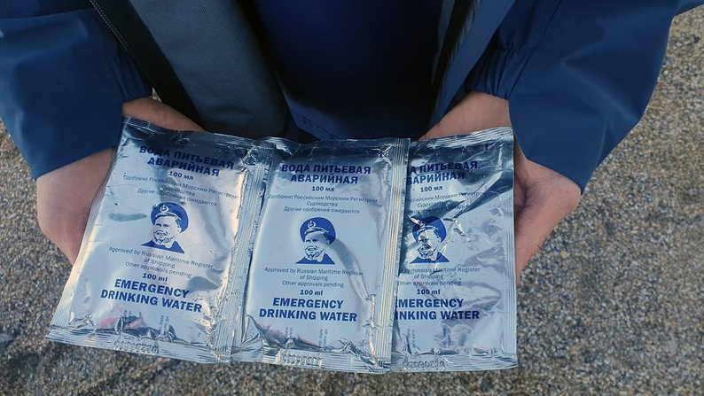

Як розповіла начальниця пресцентру сил оборони та охорони Півдня Наталя Гуменюк, росіяни вважали крейсер непотоплюваним. За її словами, тоді потопленню "Москви" сприяв і чіткий план дій командування, і погодні умови:
"Відчуваючи свою безкарність в Чорному морі, ворог наблизився на таку відстань, яка була для нього критичною, а для нас досяжною. І тоді відбулася чітка командирська реакція, прийняте рішення і його втілено. Відповідно, влучання відбулася ще і з урахуванням завантаженості крейсера боєкомплектом. Це склало додаткову детонацію, додатковий резонанс".
Командувач Військово-морських сил Збройних сил України Олексій Неїжпапа.

Пакети з водою російської армії.
Що відомо
- 13 квітня українські військові заявили, що поцілили ракетами у російський крейсер "Москва", який
погрожував захисникам Зміїного. Після влучання ракет на флагмані Чорноморського флоту Росії сталася
пожежа, він почав тонути.
- 23 квітня Росія офіційно заявила, що через затоплення флагмана Чорноморського флоту РФ "Москва" загинув один військовослужбовець на ім’я Іван Вахрушев, ще 27 моряків вважаються зниклими безвісти. Російська сторона стверджує, що решта 396 членів екіпажу були евакуйовані з крейсера на інші кораблі Чорноморського флоту, які доправили їх в окупований Севастополь.
- "Москва" стала найдорожчою втратою Росії у війні проти України — за оцінками, вартість ракетного крейсера становить близько 750 мільйонів доларів. За даними Forbes, при цьому загалом станом на 24 травня РФ втратила військової техніки на 13 мільярдів доларів.
- 14 квітня Росія визнала, що судно затонуло у Чорному морі.